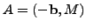
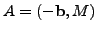
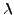
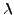

Summary
Additive preconditioning facilitates the computation of a vector in the null space of a matrix as well as a basis for this space. This amounts to new effective algorithms for solving linear systems of equations. We further incorporate our technique into the inverse iteration for computing the eigenvectors and eigenspaces of a matrix, which are the null vectors and null spaces of the same matrix shifted by its eigenvalues. This facilitates every iteration step but does not slow down convergence, according to our analysis and extensive experiments. We elaborate upon this approach for simple and multiple eigenvalues as well as for clusters of eigenvalues.
1. Solving Linear Systems of Equations with Additive Preconditioning
Given an
 matrix
matrix  of a rank , suppose we seek its
null vector or null basis, that is, a vector in the (right) null space
or a basis for this space. This is equivalent to solving the
homogeneous linear system of equations and is readily extended to
the solution of a nonhomogeneous linear system
. Indeed
we can just write
 and observe that
of a rank , suppose we seek its
null vector or null basis, that is, a vector in the (right) null space
or a basis for this space. This is equivalent to solving the
homogeneous linear system of equations and is readily extended to
the solution of a nonhomogeneous linear system
. Indeed
we can just write
 and observe that  is a null
vector for the matrix
is a null
vector for the matrix  that has its first coordinate equal to one.
that has its first coordinate equal to one.
We can obtain the solution to these problems via computing the SVD, QRP
or PLU factorizations, or the inverse of a nonsingular
submatrix of matrices  or for some
nonsingular multipliers
or for some
nonsingular multipliers  and
and  .
.
Our alternative approach employs addititive preprocessing of the
input matrix  . See detailed descriptions of this approach in the
author's technical reports in the Computer Science Program of the
Graduate Center of the City University of New York, 2005-2008 and in his
paper in Computers and Mathematics with Applications (in press).
Hereafter ``A-" and ``APP" abbreviate ``additive" and ``additive
preprocessor", respectively.
. See detailed descriptions of this approach in the
author's technical reports in the Computer Science Program of the
Graduate Center of the City University of New York, 2005-2008 and in his
paper in Computers and Mathematics with Applications (in press).
Hereafter ``A-" and ``APP" abbreviate ``additive" and ``additive
preprocessor", respectively.
Define two generators  and
and  of size
, suppose an
APP has rank equal to the nullity of the matrix
of size
, suppose an
APP has rank equal to the nullity of the matrix  ,
and let the A-modification have full rank. Then the columns of
the null aggregate form a null basis for the matrix
,
and let the A-modification have full rank. Then the columns of
the null aggregate form a null basis for the matrix  ,
and so we call the matrix a null matrix basis for the
matrix
,
and so we call the matrix a null matrix basis for the
matrix  .
.
According to our analysis and experiments, A-preprocessing of an  ill conditioned input matrix
ill conditioned input matrix  with a random well conditioned and
properly scaled APPs of a rank
with a random well conditioned and
properly scaled APPs of a rank  (normalized so that the ratio
is neither large nor small) is expected to yield an
A-modification with the condition number of the order of
where
denotes the
(normalized so that the ratio
is neither large nor small) is expected to yield an
A-modification with the condition number of the order of
where
denotes the  th
largest singular value of the matrix
th
largest singular value of the matrix  . If
. If
 , then our A-preprocessing is expected to be A-preconditioning, that is, expected to decrease the condition number
substantially.
, then our A-preprocessing is expected to be A-preconditioning, that is, expected to decrease the condition number
substantially.
Furthermore, even very weak randomization is actually sufficient, allowing us to choose structured or sparse APPs. Since our techniques preserve matrix structure and improve conditioning, they enable effective application of the Conjugate Gradient algorithms.
2. Extension to Eigen-solving
The eigenspace of a matrix  associated with its eigenvalue 
is just the null space of the matrix
, and so
the above approach can be incorporated into the known eigen-solvers. We
elaborate upon its incorporation into the inverse iteration. Our study
can be readily extended to the shift-and-invert enhancements of the
Lanczos, Arnoldi, Jacobi-Davidson, and other effective eigen-solvers.
associated with its eigenvalue 
is just the null space of the matrix
, and so
the above approach can be incorporated into the known eigen-solvers. We
elaborate upon its incorporation into the inverse iteration. Our study
can be readily extended to the shift-and-invert enhancements of the
Lanczos, Arnoldi, Jacobi-Davidson, and other effective eigen-solvers.
Our analysis and experiments show that our modification does not affect the convergence rate, even though it improves conditioning of every iteration step. We elaborate upon this approach for simple and multiple eigenvalues as well as for clusters of eigenvalues and point out its various natural extensions. In spite of apparent similarity of the classical and our algorithms, our analysis and in particular our treatment of multiple and clustered eigenvalues and our proof of local quadratic convergence show the distinct nature of the power of the two approaches. This suggests concurrent application of both iterations (also performed concurrently for a number of distinct initial approximations to the eigenvalues) to improve global convergence.
We apply A-preconditioning to the inverse iteration in its both linear and multilinear settings. The latter variant is natural for approximating multiple and clustered eigenvalues as well as complex conjugate pairs of eigenvalues of a real matrix.